4.3.1 Introduction
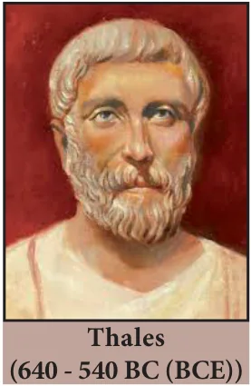
Thales, (640 - 540 BC (BCE)) the most famous Greek mathematician and philosopher lived around seventh century BC (BCE). He possessed knowledge to the extent that he became the first of seven sages of Greece. Thales was the first man to announce that any idea that emerged should be tested scientifically and only then it can be accepted. In this aspect, he did great investigations in mathematics and astronomy and discovered many concepts. He was credited for providing first proof in mathematics, which today is called by the name “Basic Proportionality Theorem”. It is also called “Thales Theorem” named after its discoverer.
The discovery of the Thales theorem itself is a very interesting story. When Thales travelled to Egypt, he was challenged by Egyptians to determine the height of one of several magnificent pyramids that they had constructed. Thales accepted the challenge and used similarity of triangles to determine the same successfully, another triumphant application of Geometry. Since \(X_0\), \(X_1\) and \(H_0\) are known, we can determine the height \(H_1\) of the pyramid.
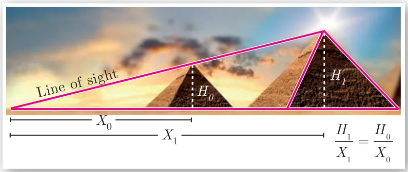
To understand the basic proportionality theorem or Thales theorem, let us do the following activity.
Activity 2
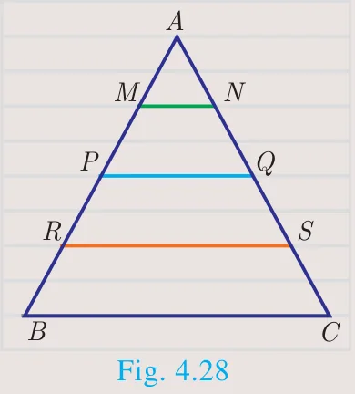
Take any ruled paper and draw a triangle \(ABC\) with its base on one of the lines. Several parallel lines will cut the triangle \(ABC\).
Select any one line among them and name the points where it meets the sides \(AB\) and \(AC\) as \(P\) and \(Q\).
Can we find the ratio of \(\dfrac{AP}{PB}\) and \(\dfrac{AQ}{QC}\). By measuring \(AP\), \(PB\), \(AQ\) and \(QC\) through a scale, verify whether the ratios are equal or not? Try for different parallel lines, say \(MN\) and \(RS\).
Now find the ratios \(\dfrac{AM}{MB}, \dfrac{AN}{NC}\) and \(\dfrac{AR}{RB}, \dfrac{AS}{SC}\).
Check if they are equal? The conclusion will lead us to one of the most important theorem in Geometry, which we will discuss below.
Theorem 1: Basic Proportionality Theorem (BPT) or Thales theorem
Statement
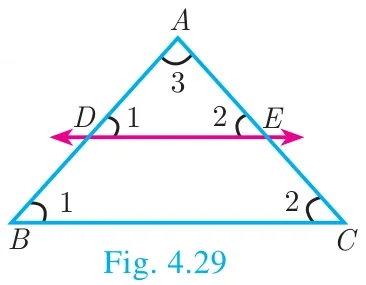
A straight line drawn parallel to a side of triangle intersecting the other two sides, divides the sides in the same ratio.
Proof
Given: In \(\Delta ABC\), \(D\) is a point on \(AB\) and \(E\) is a point on \(AC\).
To prove: \(\dfrac{AD}{DB} = \dfrac{AE}{EC}\)
Construction: Draw a line \(DE \parallel BC\)
| No. | Statement | Reason |
|---|---|---|
| 1. | \(\angle ABC = \angle ADE = \angle 1\) | Corresponding angles are equal because \(DE \parallel BC\) |
| 2. | \(\angle ACB = \angle AED = \angle 2\) | Corresponding angles are equal because \(DE \parallel BC\) |
| 3. | \(\angle DAE = \angle BAC = \angle 3\) | Both triangles have a common angle |
| 4. | \(\Delta ABC \sim \Delta ADE\) | By \(AAA\) similarity |
| \(\dfrac{AB}{AD} = \dfrac{AC}{AE}\) | Corresponding sides are proportional | |
| \(\dfrac{AD + DB}{AD} = \dfrac{AE + EC}{AE}\) | Split \(AB\) and \(AC\) using the points \(D\) and \(E\). | |
| \(1 + \dfrac{DB}{AD} = 1 + \dfrac{EC}{AE}\) | On simplification | |
| \(\dfrac{DB}{AD} = \dfrac{EC}{AE}\) | Cancelling 1 on both sides | |
| \(\dfrac{AD}{DB} = \dfrac{AE}{EC}\) | Taking reciprocals | |
| Hence proved | ||
Corollary
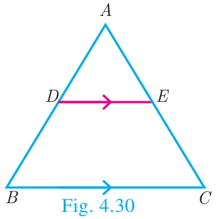
If in \(\Delta ABC\), a straight line \(DE\) parallel to \(BC\), intersects \(AB\) at \(D\) and \(AC\) at \(E\), then
(i) \(\dfrac{AB}{AD} = \dfrac{AC}{AE}\) (ii) \(\dfrac{AB}{DB} = \dfrac{AC}{EC}\).
Proof
In \(\Delta ABC\), \(DE \parallel BC\),
Therefore, \(\dfrac{AD}{DB} = \dfrac{AE}{EC}\) (by Basic Proportionality Theorem)
(i) Taking reciprocals, we get \(\dfrac{DB}{AD} = \dfrac{EC}{AE}\)
Add 1 to both in the sides \(\dfrac{DB}{AD} + 1 = \dfrac{EC}{AE} + 1\)
\(\dfrac{DB + AD}{AD} = \dfrac{EC + AE}{AE}\) so, \(\dfrac{AB}{AD} = \dfrac{AC}{AE}\)
(ii) Add 1 to both the sides
\(\dfrac{AD}{DB} + 1 = \dfrac{AE}{EC} + 1\)
Therefore, \(\dfrac{AB}{DB} = \dfrac{AC}{EC}\)
Is the converse of Basic Proportionality Theorem also true? To examine let us do the following illustration.
Illustration
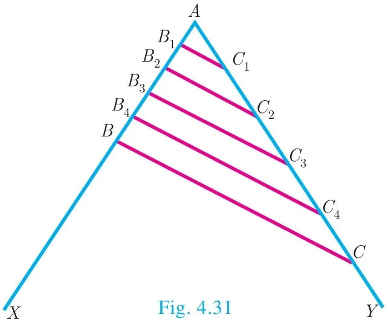
Draw an angle \(XAY\) on your notebook as shown in Fig.4.31 and on ray \(AX\), mark points \(B_1, B_2, B_3, B_4\) and \(B\) such that \(AB_1 = B_1B_2 = B_2B_3 = B_3B_4 = B_4B = 1\) cm.
Similarly on ray \(AY\), mark points \(C_1, C_2, C_3, C_4\) and \(C\), such that \(AC_1 = C_1C_2 = C_2C_3 = C_3C_4 = C_4C = 2\) cm, Join \(B_1C_1\) and \(BC\).
Observe that \(\dfrac{AB_1}{B_1B} = \dfrac{AC_1}{C_1C} = \dfrac{1}{4}\) and \(B_1C_1 \parallel BC\)
Similarly joining \(B_2C_2\), \(B_3C_3\) and \(B_4C_4\) you see that
\(\dfrac{AB_2}{B_2B} = \dfrac{AC_2}{C_2C} = \dfrac{2}{3}\) and \(B_2C_2 \parallel BC\)
\(\dfrac{AB_3}{B_3B} = \dfrac{AC_3}{C_3C} = \dfrac{3}{2}\) and \(B_3C_3 \parallel BC\)
\(\dfrac{AB_4}{B_4B} = \dfrac{AC_4}{C_4C} = \dfrac{4}{1}\) and \(B_4C_4 \parallel BC\)
From this we observe that if a line divides two sides of a triangle in the same ratio, then the line is parallel to the third side.
Therefore, we obtain the following theorem called converse of the Thales theorem.
Theorem 2: Converse of Basic Proportionality Theorem
Statement
If a straight line divides any two sides of a triangle in the same ratio, then the line must be parallel to the third side.
Proof
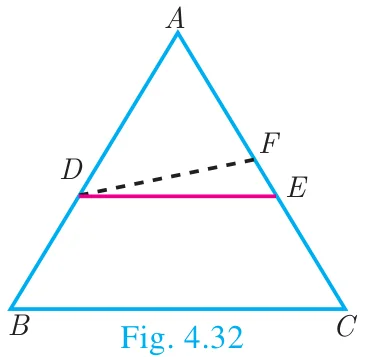
Given : In \(\Delta ABC\), \(\dfrac{AD}{DB} = \dfrac{AE}{EC}\)
To prove : \(DE \parallel BC\)
Construction : If \(DE\) is not parallel to \(BC\), draw \(DF \parallel BC\).
| No. | Statement | Reason |
|---|---|---|
| 1. | \(\dfrac{AD}{DB} = \dfrac{AE}{EC}\) ...(1) | Given |
| 2. | \(\Delta ABC,\ DF \parallel BC\) | Construction |
| 3. | \(\dfrac{AD}{DB} = \dfrac{AF}{FC}\) ...(2) | Thales theorem |
| 4. | \(\dfrac{AE}{EC} = \dfrac{AF}{FC}\) | From (1) and (2) |
| \(\dfrac{AE}{EC} + 1 = \dfrac{AF}{FC} + 1\) \(\dfrac{AE + EC}{EC} = \dfrac{AF + FC}{FC}\) | Adding 1 to both sides | |
| \(\dfrac{AC}{EC} = \dfrac{AC}{FC}\) | ||
| \(EC = FC\) | Cancelling \(AC\) on both sides | |
| Therefore, \(E = F\) | Our assumption that \(DE\) is not parallel to \(BC\) is wrong. | |
| Thus \(DE \parallel BC\) | Hence proved |
Theorem 3: Angle Bisector Theorem
Statement
The internal bisector of an angle of a triangle divides the opposite side internally in the ratio of the corresponding sides containing the angle.
Proof
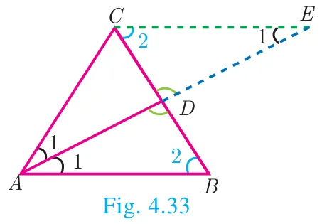
Given : In \(\Delta ABC\), AD is the internal bisector
To prove : \(\dfrac{AB}{AC} = \dfrac{BD}{CD}\)
Construction : Draw a line through \(C\) parallel to \(AB\). Extend \(AD\) to meet line through \(C\) at \(E\)
| No | Statement | Reason |
|---|---|---|
| 1. | \(\angle AEC = \angle BAE = \angle 1\) \(\angle ABD = \angle ECD = \angle 2\) | Two parallel lines cut by a transversal make alternate angles equal. |
| 2. | \(\Delta ACE\) is isosceles \(AC = CE\) ...(1) | In \(\Delta ACE,\ \angle CAE = \angle CEA\) |
| 3. | \(\Delta ABD \sim \Delta ECD\) \(\dfrac{AB}{CE} = \dfrac{BD}{CD}\) | By AA Similarity |
| 4. | \(\dfrac{AB}{AC} = \dfrac{BD}{CD}\) | From (1) \(AC = CE\). Hence proved. |
Activity 3
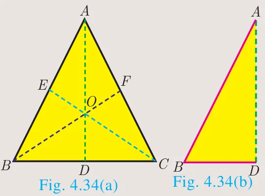
Step 1: Take a chart and cut it like a triangle as shown in Fig.4.34(a).
Step 2: Then fold it along the symmetric line \(AD\). Then C and B will be one upon the other.
Step 3: Similarly fold it along CE, then \(B\) and \(A\) will be one upon the other.
Step 4: Similarly fold it along BF, then \(A\) and \(C\) will be one upon the other.
Find \(AB,\ AC,\ BD,\ DC\) using a scale.
Find \(\dfrac{AB}{AC}, \dfrac{BD}{DC}\) check if they are equal?
In the three cases, the internal bisector of an angle of a triangle divides the opposite side internally in the ratio of the corresponding sides containing the angle.
What do you conclude from this activity?
Theorem 4: Converse of Angle Bisector Theorem
Statement
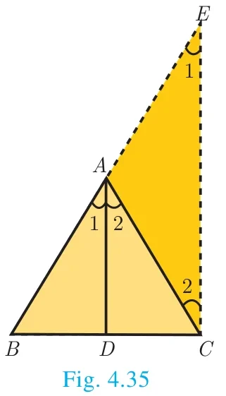
If a straight line through one vertex of a triangle divides the opposite side internally in the ratio of the other two sides, then the line bisects the angle internally at the vertex.
Proof
Given : ABC is a triangle. \(AD\) divides \(BC\) in the ratio of the sides containing the angles \(\angle A\) to meet \(BC\) at \(D\).
That is \(\dfrac{AB}{AC} = \dfrac{BD}{DC}\) ... (1)
To prove : AD bisects \(\angle A\) i.e. \(\angle 1 = \angle 2\)
Construction : Draw \(CE \parallel DA\). Extend \(BA\) to meet at \(E\).
| No. | Statement | Reason |
|---|---|---|
| 1. | Let \(\angle BAD = \angle 1\) and \(\angle DAC = \angle 2\) | Assumption |
| 2. | \(\angle BAD = \angle AEC = \angle 1\) | Since \(DA \parallel CE\) and \(AC\) is transversal, corresponding angles are equal |
| 3. | \(\angle DAC = \angle ACE = \angle 2\) | Since \(DA \parallel CE\) and \(AC\) is transversal, Alternate angles are equal |
| 4. | \(\dfrac{BA}{AE} = \dfrac{BD}{DC}\) ... (2) | In \(\Delta BCE\) by Thales theorem |
| 5. | \(\dfrac{AB}{AC} = \dfrac{BD}{DC}\) | From (1) |
| 6. | \(\dfrac{AB}{AC} = \dfrac{BA}{AE}\) | From (1) and (2) |
| 7. | \(AC = AE\) ... (3) | Cancelling \(AB\) |
| 8. | \(\angle 1 = \angle 2\) | \(\Delta ACE\) is isosceles by (3) |
| 9. | AD bisects \(\angle A\) | Since, \(\angle 1 = \angle BAD = \angle 2 = \angle DAC\). Hence proved |
Example 4.12
In \(\Delta ABC\), if \(DE \parallel BC\), \(AD = x\), \(DB = x - 2\), \(AE = x + 2\) and \(EC = x - 1\) then find the lengths of the sides \(AB\) and \(AC\).
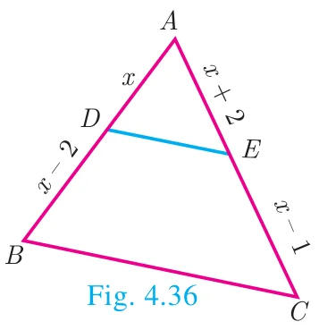
Solution
In \(\Delta ABC\) we have \(DE \parallel BC\).
By Thales theorem, we have \(\dfrac{AD}{DB} = \dfrac{AE}{EC}\)
\(\dfrac{x}{x-2} = \dfrac{x+2}{x-1}\) gives \(x(x-1) = (x-2)(x+2)\)
Hence, \(x^2 - x = x^2 - 4\) so, \(x = 4\)
When \(x = 4\), \(AD = 4\), \(DB = x - 2 = 2\), \(AE = x + 2 = 6\), \(EC = x - 1 = 3\).
Hence, \(AB = AD + DB = 4 + 2 = 6\), \(AC = AE + EC = 6 + 3 = 9\).
Therefore, \(AB = 6,\ AC = 9\).
Example 4.13
\(D\) and \(E\) are respectively the points on the sides \(AB\) and \(AC\) of a \(\Delta ABC\) such that \(AB = 5.6\) cm, \(AD = 1.4\) cm, \(AC = 7.2\) cm and \(AE = 1.8\) cm, show that \(DE \parallel BC\).
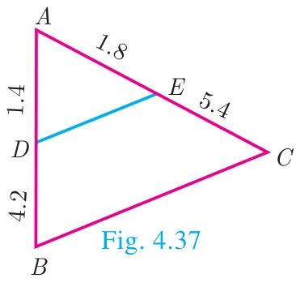
Solution
We have \(AB = 5.6\) cm, \(AD = 1.4\) cm, \(AC = 7.2\) cm and \(AE = 1.8\) cm.
\(BD = AB - AD = 5.6 - 1.4 = 4.2\) cm
and \(EC = AC - AE = 7.2 - 1.8 = 5.4\) cm.
\(\dfrac{AD}{DB} = \dfrac{1.4}{4.2} = \dfrac{1}{3}\) and \(\dfrac{AE}{EC} = \dfrac{1.8}{5.4} = \dfrac{1}{3}\)
\(\dfrac{AD}{DB} = \dfrac{AE}{EC}\)
Therefore, by converse of Basic Proportionality Theorem, we have \(DE\) is parallel to \(BC\). Hence proved.
Example 4.14
In the Fig.4.38, \(DE \parallel AC\) and \(DC \parallel AP\). Prove that \(\dfrac{BE}{EC} = \dfrac{BC}{CP}\).
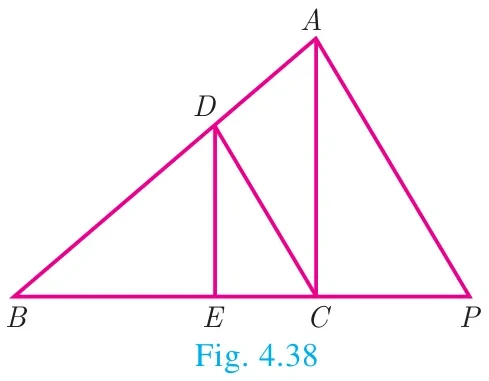
Solution
In \(\Delta BPA\), we have \(DC \parallel AP\). By Basic Proportionality Theorem,
we have \(\dfrac{BC}{CP} = \dfrac{BD}{DA}\) ...(1)
In \(\Delta BCA\), we have \(DE \parallel AC\). By Basic Proportionality Theorem, we have,
\(\dfrac{BE}{EC} = \dfrac{BD}{DA}\) ...(2)
From (1) and (2) we get, \(\dfrac{BE}{EC} = \dfrac{BC}{CP}\). Hence proved.
Example 4.15
In the Fig.4.39, \(AD\) is the bisector of \(\angle A\). If \(BD = 4\) cm, \(DC = 3\) cm and \(AB = 6\) cm, find \(AC\).
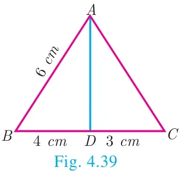
Solution
In \(\Delta ABC\), \(AD\) is the bisector of \(\angle A\)
By Angle Bisector Theorem
\(\dfrac{BD}{DC} = \dfrac{AB}{AC}\)
\(\dfrac{4}{3} = \dfrac{6}{AC}\) gives \(4AC = 18\). Hence, \(AC = \dfrac{9}{2} = 4.5\) cm
Example 4.16
In the Fig. 4.40, \(AD\) is the bisector of \(\angle BAC\), if \(AB = 10\) cm, \(AC = 14\) cm and BC \(= 6\) cm. Find \(BD\) and \(DC\).
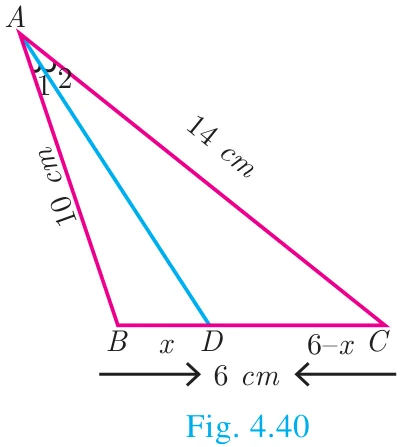
Solution
Let \(BD = x\) cm, then \(DC = (6 - x)\) cm
AD is the bisector of \(\angle A\)
By Angle Bisector Theorem
\(\dfrac{AB}{AC} = \dfrac{BD}{DC}\)
\(\dfrac{10}{14} = \dfrac{x}{6-x}\) gives \(\dfrac{5}{7} = \dfrac{x}{6-x}\)
\(12x = 30\) we get, \(x = \dfrac{30}{12} = 2.5\) cm
Therefore, \(BD = 2.5\) cm, \(DC = 6 - x = 6 - 2.5 = 3.5\) cm
Progress Check
- A straight line drawn \(\underline{\qquad}\) to a side of a triangle divides the other two sides proportionally.
- Basic Proportionality Theorem is also known as \(\underline{\qquad}\).
- Let \(\Delta ABC\) be equilateral. If \(D\) is a point on \(BC\) and \(AD\) is the internal bisector of \(\angle A\). Using Angle Bisector Theorem, \(\dfrac{BD}{DC}\) is \(\underline{\qquad}\).
- The \(\underline{\qquad}\) of an angle of a triangle divides the opposite side internally in the ratio of the corresponding sides containing the angle.
- If the median \(AD\) to the side \(BC\) of a \(\Delta ABC\) is also an angle bisector of \(\angle A\) then \(\dfrac{AB}{AC}\) is \(\underline{\qquad}\).
4.3.2 Construction of triangle
We have already learnt in previous class how to construct triangles when sides and angles are given.
In this section, let us construct a triangle when the following are given :
- the base, vertical angle and the median on the base
- the base, vertical angle and the altitude on the base
- the base, vertical angle and the point on the base where the bisector of the vertical angle meets the base.
First, we consider the following construction,
Construction of a segment of a circle on a given line segment containing an angle \(\theta\)
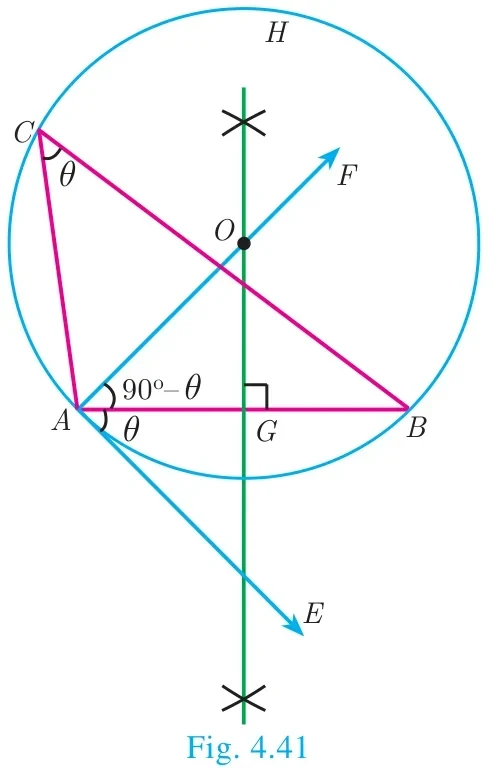
Construction
Step 1: Draw a line segment \(\overline{AB}\).
Step 2: At \(A\), take \(\angle BAE = \theta\). Draw \(AE\).
Step 3: Draw, \(AF \perp AE\).
Step 4: Draw the perpendicular bisector of \(AB\) meeting \(AF\) at \(O\).
Step 5: With \(O\) as centre and \(OA\) as radius draw a circle \(ABH\).
Step 6: Take any point \(C\) on the circle, By the alternate segments theorem, the major arc \(ACB\) is the required segment of the circle containing the angle \(\theta\).
Note
If \(C_1, C_2, \ldots\) are points on the circle, then all the triangles \(\Delta BAC_1,\ \Delta BAC_2, \ldots\) are with same base and the same vertical angle.
Construction of a triangle when its base, the vertical angle and the median from the vertex of the base are given.
Example 4.17
Construct a \(\Delta PQR\) in which \(PQ = 8\) cm, \(\angle R = 60^\circ\) and the median \(RG\) from \(R\) to \(PQ\) is 5.8 cm. Find the length of the altitude from \(R\) to \(PQ\).
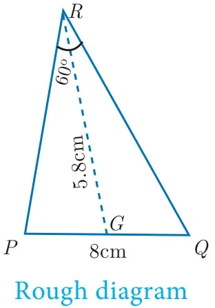
Solution
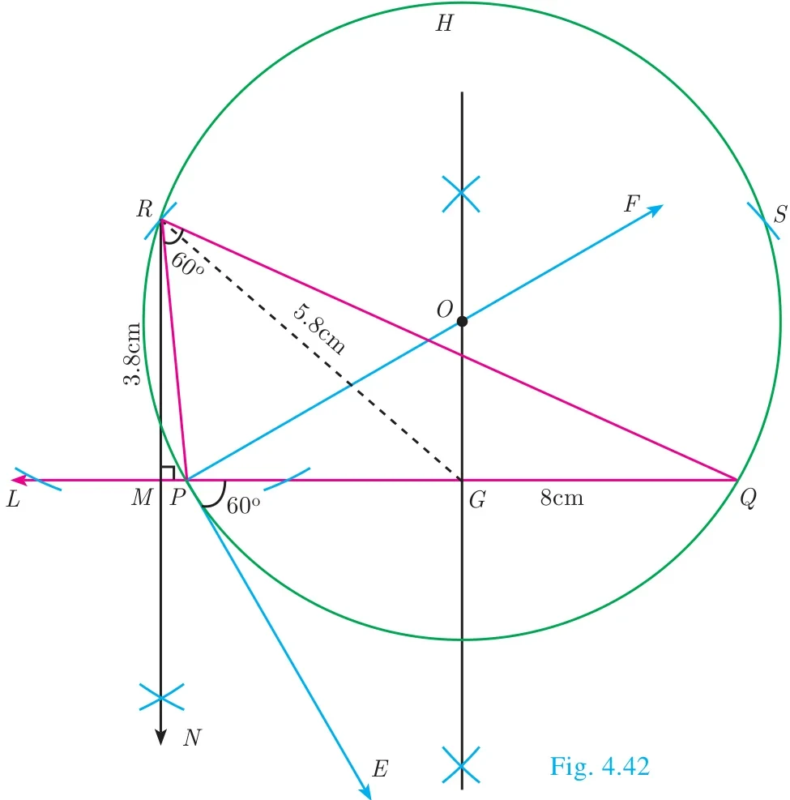
Construction
Step 1: Draw a line segment \(PQ = 8\) cm.
Step 2: At \(P\), draw \(PE\) such that \(\angle QPE = 60^\circ\).
Step 3: At \(P\), draw \(PF\) such that \(\angle EPF = 90^\circ\).
Step 4: Draw the perpendicular bisector to \(PQ\), which intersects \(PF\) at \(O\) and \(PQ\) at \(G\).
Step 5: With \(O\) as centre and \(OP\) as radius draw a circle.
Step 6: From \(G\) mark arcs of radius 5.8 cm on the circle. Mark them as \(R\) and \(S\).
Step 7: Join \(PR\) and \(RQ\). Then \(\Delta PQR\) is the required triangle.
Step 8: From \(R\) draw a line \(RN\) perpendicular to \(LQ\). \(LQ\) meets \(RN\) at \(M\)
Step 9: The length of the altitude is \(RM = 3.8\) cm.
Note
We can get another \(\Delta PQS\) for the given measurements.
Construct a triangle when its base, the vertical angle and the altitude from the vertex to the base are given.
Example 4.18
Construct a triangle \(\Delta PQR\) such that \(QR = 5\) cm, \(\angle P = 30^\circ\) and the altitude from \(P\) to \(QR\) is of length 4.2 cm.
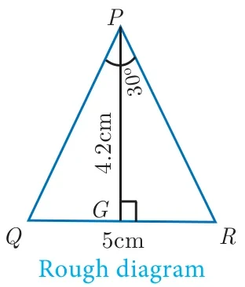
Solution
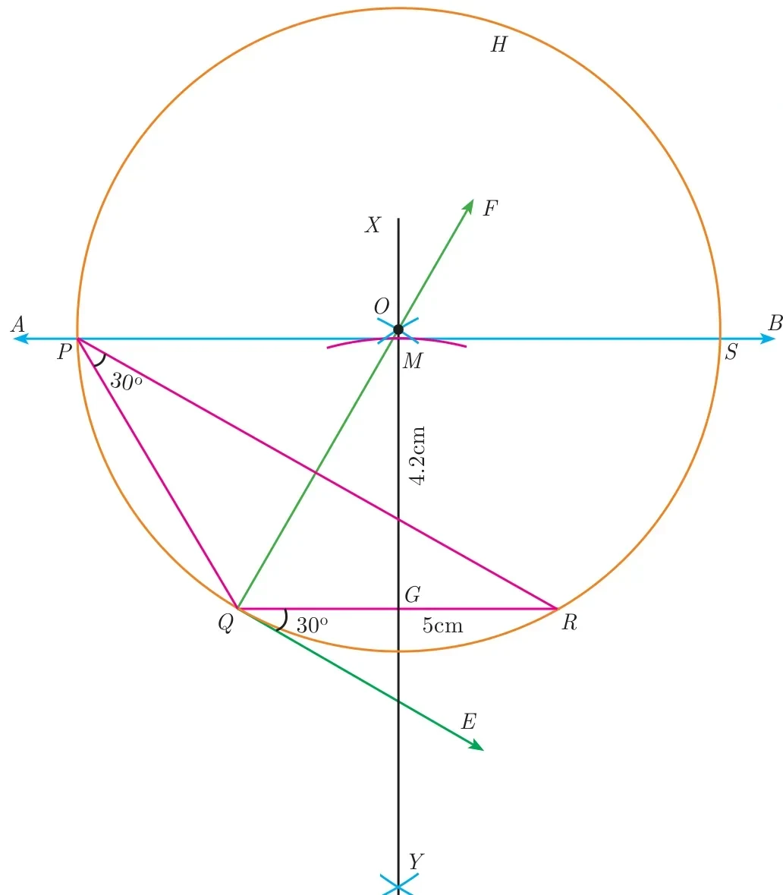
Construction
Step 1 : Draw a line segment \(QR = 5\) cm.
Step 2 : At \(Q\) draw \(QE\) such that \(\angle RQE = 30^\circ\).
Step 3 : At \(Q\) draw \(QF\) such that \(\angle EQF = 90^\circ\).
Step 4 : Draw the perpendicular bisector \(XY\) to \(QR\) which intersects \(QF\) at \(O\) and \(QR\) at \(G\).
Step 5 : With \(O\) as centre and \(OQ\) as radius draw a circle.
Step 6: From \(G\) mark an arc in the line \(XY\) at \(M\), such that \(GM = 4.2\) cm.
Step 7 : Draw \(AB\) through \(M\) which is parallel to \(QR\).
Step 8 : \(AB\) meets the circle at \(P\) and \(S\).
Step 9 : Join \(QP\) and \(RP\). Then \(\Delta PQR\) is the required triangle.
Note
\(\Delta SQR\) is another required triangle for the given measurements.
Construct of a triangle when its base, the vertical angle and the point on the base where the bisector of the vertical angle meets the base
Example 4.19
Draw a triangle \(ABC\) of base \(BC = 8\) cm, \(\angle A = 60^\circ\) and the bisector of \(\angle A\) meets \(BC\) at \(D\) such that \(BD = 6\) cm.
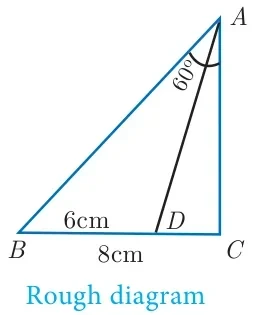
Solution
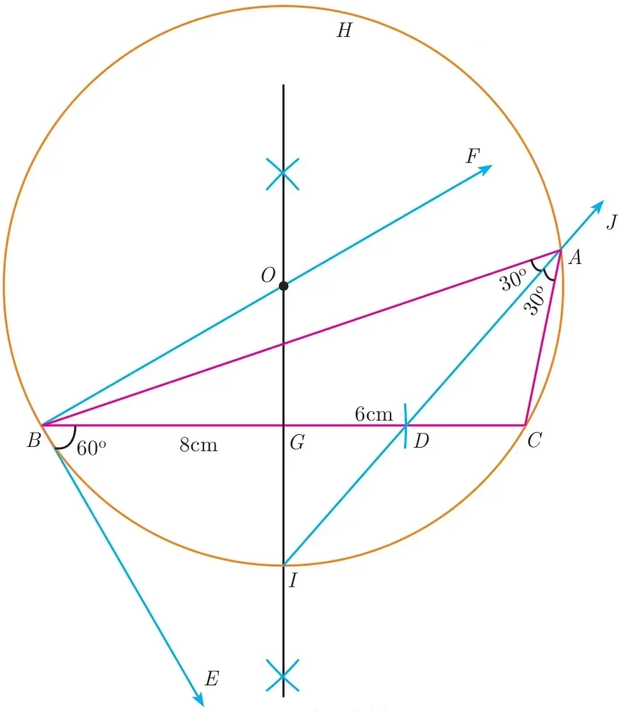
Construction
Step 1 : Draw a line segment \(BC = 8\) cm.
Step 2 : At \(B\), draw \(BE\) such that \(\angle CBE = 60^\circ\).
Step 3 : At \(B\), draw BF such that \(\angle EBF = 90^\circ\).
Step 4 : Draw the perpendicular bisector to \(BC\), which intersects \(BF\) at \(O\) and \(BC\) at \(G\).
Step 5 : With \(O\) as centre and \(OB\) as radius draw a circle.
Step 6 : From \(B\), mark an arc of 6cm on \(BC\) at \(D\).
Step 7 : The perpendicular bisector intersects the circle at I. Joint \(ID\).
Step 8 : \(ID\) produced meets the circle at \(A\). Now join \(AB\) and \(AC\).
Then \(\Delta ABC\) is the required triangle.